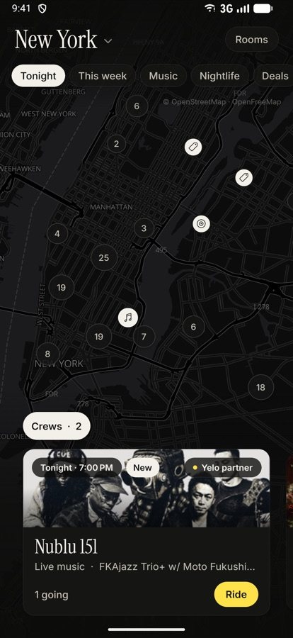
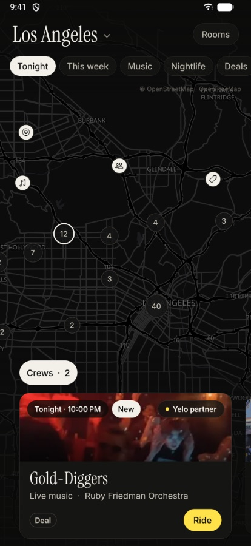
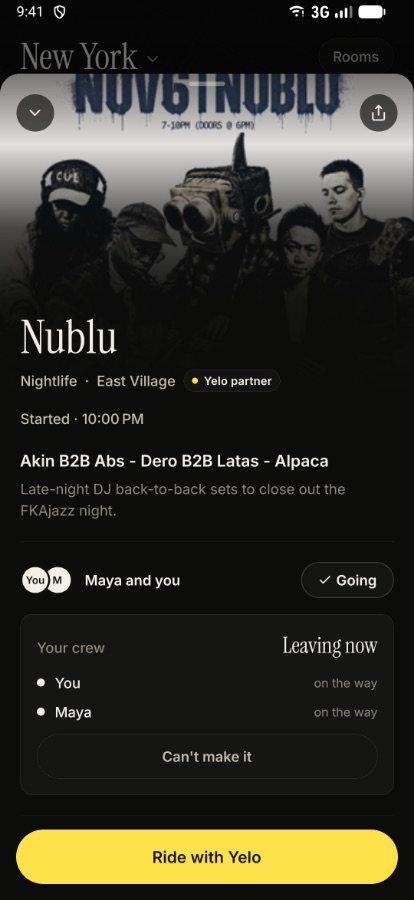
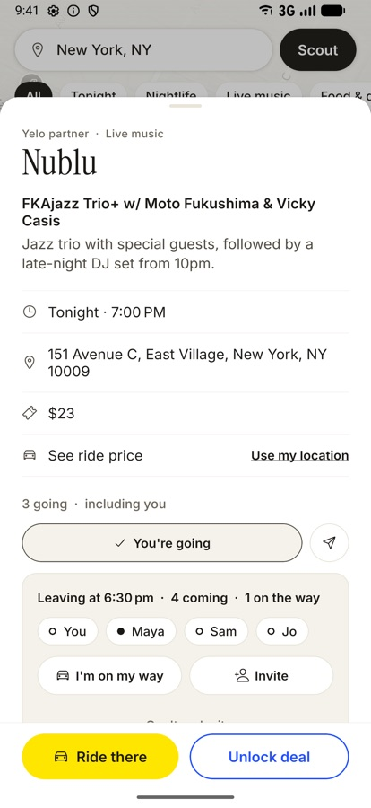
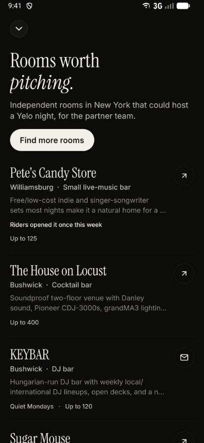

Scout searches the web every few minutes for events, parties and happy hours in New York and Los Angeles, puts them on one map, and shows what a ride there costs. Yelo's partner venues come first.
You're on an iPhone. Scout's iPhone version runs in a live demo for now: ask Farhan to show you. Android friends can install it below.
On a laptop? Point your Android phone's camera at this code to download Scout.

Real screens from the app, with live data the agent found on the web this week.




Android blocks apps from outside the Play Store by default, so it asks once.
On an iPhone? There's no iOS download yet. Ask Farhan for a live demo.
List your nights and deals, see how many riders open your spot and tap Ride, and get a link to share each night.